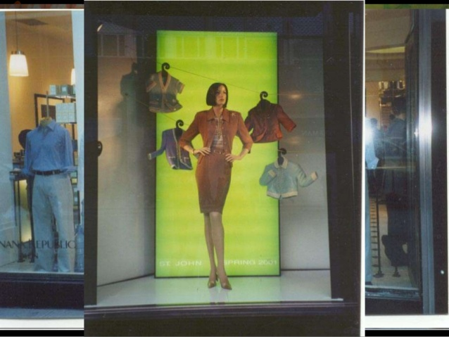

Lo sviluppatore del prodotto é la figura professionale che si occupa di sovraintendere tutto il ciclo di produzione, ha forti componenti tecniche e una solida conoscenza del prodotto. Inoltre, garantisce il rispetto dei criteri legati allo stile e quelli relativi alla correttezza tecnica del prodotto;
Il fashion style é il professionista che collabora a stretto contatto con stilisti, redazioni e celebrities per valorizzare ed esaltare al meglio i capi di una collezione nell’ambito di una sfilata, di una campagna pubblicitaria o di un evento promozionale;
Il social media manager é una figura manageriale esperta di comunicazione digitale che possiede una visione globale della struttura social di un’azienda;
Il virtual visual merchandiser é un un grafico che cura le vetrine virtuali dei negozi online che é al tempo stesso un creativo e uno psicologo del marketing: posiziona infatti i vari prodotti nella vetrina virtuale cercando di renderli il più attraenti possibili agli occhi dei potenziali clienti;

Il web marketing specialist é una figura strategica di grande importanza sia per le vendite che per la promozione del brand o del prodotto. Nel settore fashion é il responsabile del marketing e della comunicazione on line;
Il communication designer é il progettista in grado di ideare e gestire campagne di comunicazione integrata pensate sul cliente e per questo adattabili sotto ogni aspetto per trovare la massima efficacia del messaggio comunicativo.
La moda
Stilista, ricercatore di tendenze,modellista e progettista